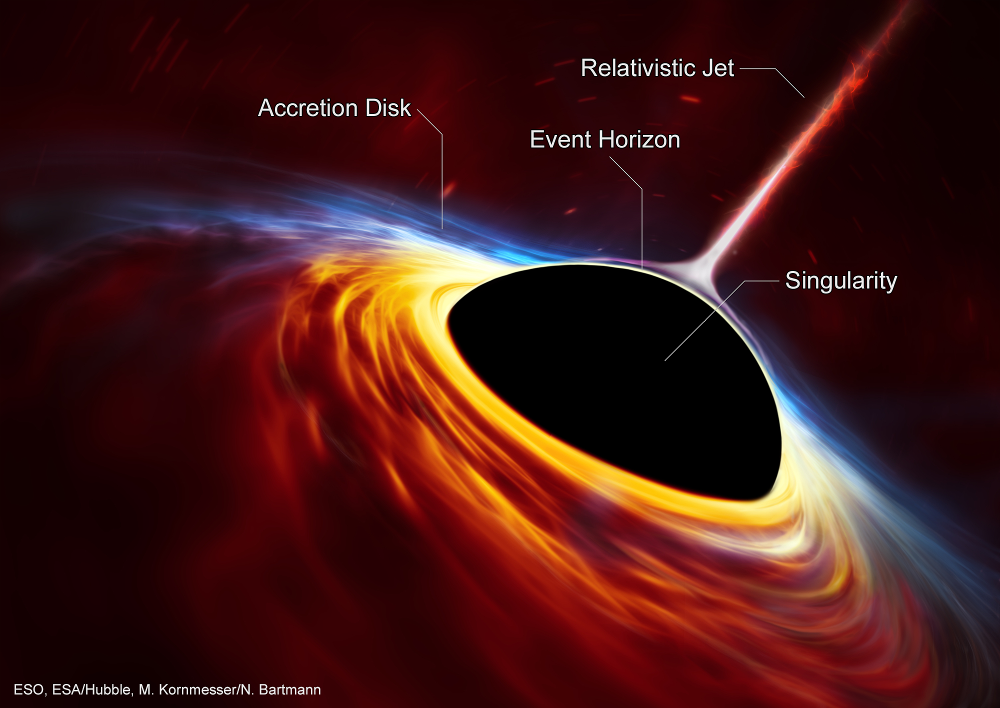
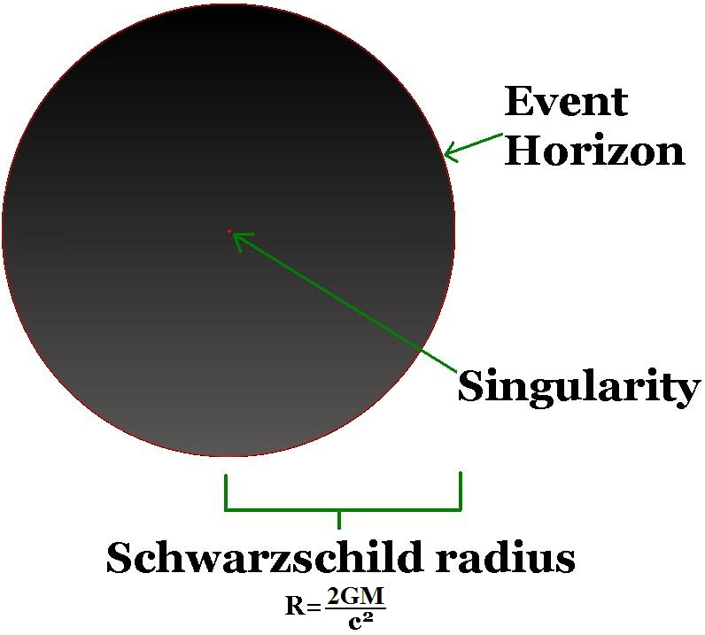
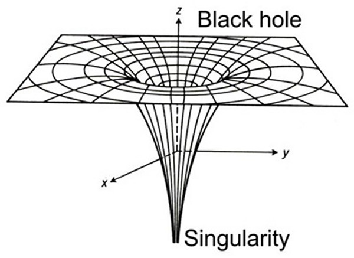

Black Holes
DESCRIPTION:-
Black Holes are naturally occuring phenomenon in the curavture of space-time. They can also be called as one of the solutions of Einstein's Field Equations.In a gross term, Black Holes are a large mass concentrated at a much small volume.
IMAGES:-




SOME DEFINITIONS:-
- Event Horizon
The surface of black hole beyond which even light cannot escape.
- Accretion Disk
A structure formed by diffused material in motion around a massive central body. The central body most oftenly is a star.
- Relativistic Jets
Powerful jets of radiation and particles, travelling close to the speed of light. Mostly observed in Super Massive Black Holes.
- Singularity
A point which contains a huge mass in an infinitely small space, where density and gravity become infinite and space-time curves infinitely. The Laws of Physics as we know them cease to exist here.